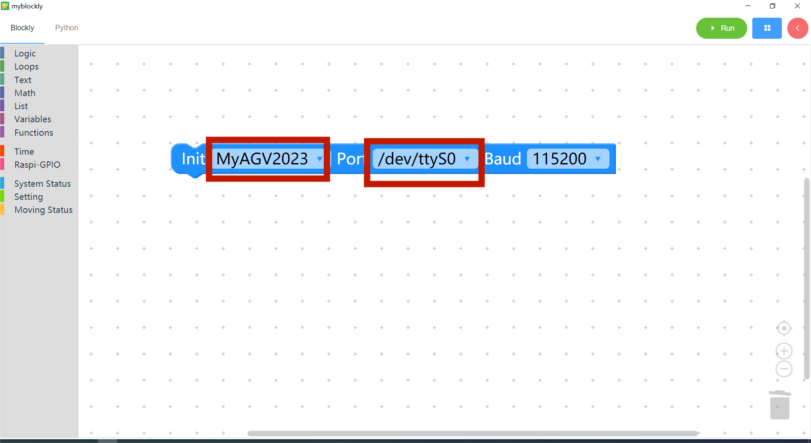
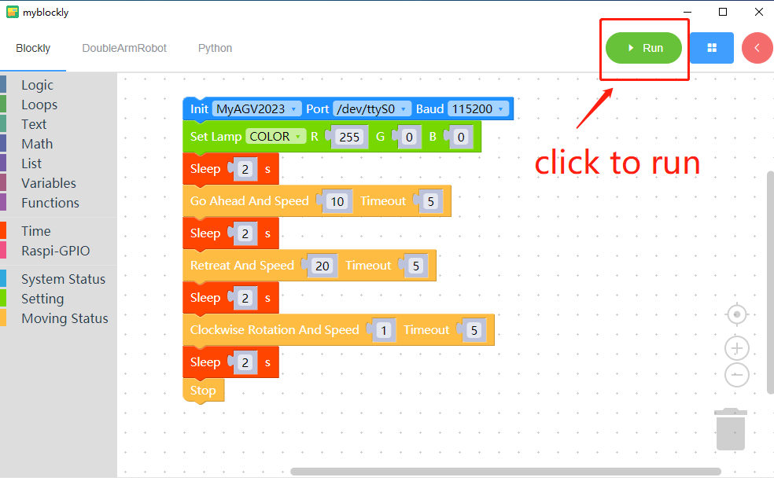
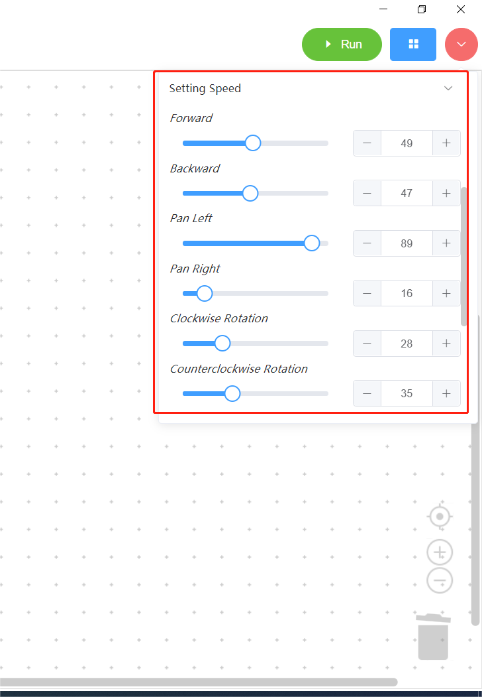
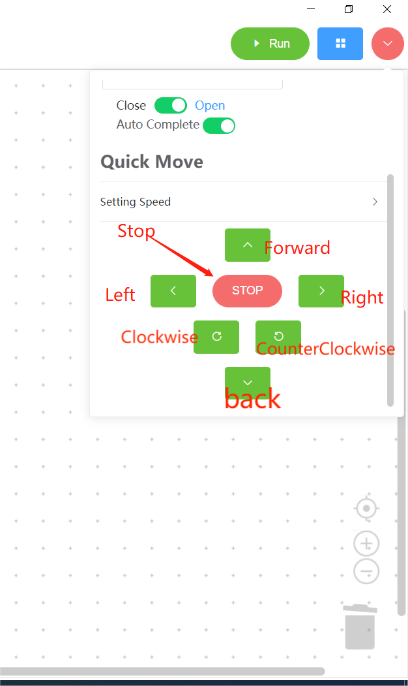
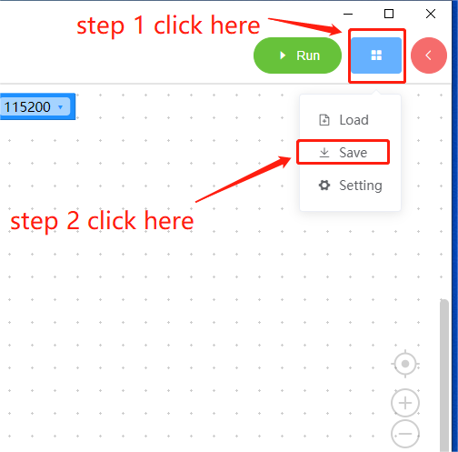
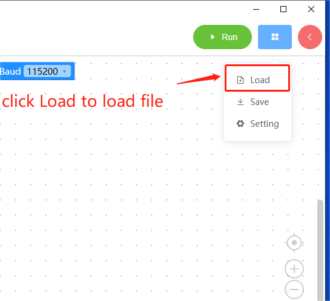

3 myBlockly 界面的显示和基本功能的使用

| 编号 | 图解说明 |
|---|---|
| 1 | 工具箱栏：点击特定类别，选择不同的构建模块 |
| 2 | 工作区：您可以将工具箱中的构件拖到工作区中使用 |
| 3 | 运行按钮：在工作区中运行代码 |
| 4 | 点击后将弹出以下菜单： - 保存：保存当前工作区 - 加载：加载已保存的工作区 - 设置：进入设置页面，您可以在此设置语言和主题。 |
| 5 | 点击后，控制面板将弹出。在面板中，您可以通过点击关节控制或坐标控制栏中的 "+/-"来快速控制机械臂的运动。6 点击后，您可以查看工作区中生成的 python 代码。7 将工作区居中。8 放大工作区。9 缩小工作区。 |
| 6 | 点击查看工作区生成的 python 代码 |
| 7 | 将工作区居中 |
| 8 | 放大工作区 |
| 9 | 缩小工作区域 |
| 10 | 垃圾桶：将工作区中的积木拖到此处可删除积木；同时点击垃圾桶可查看并恢复已删除的积木 |
计划运行
打开 myBlockly，选择机器为 myAGV 2023，选择端口，并选择波特率为 115200。
myAGV 2023 Pi 版本端口为 /dev/ttyAMA2;

将一些程序块拖入工作区，然后点击运行按钮。

根据上述构件，机器将执行以下操作：
- 将机器的 RGB 灯光模式设为闪光灯模式，颜色设为红色 255。
- 等待 2 秒钟。
- 机器以 10,000 的速度向前运动，默认运动时间为 5 秒。
- 等待 2 秒钟
- 机器以 20,000 的速度向后运动，默认运动时间为 5 秒。
- 等待 2 秒钟
- 机器以 1 的速度顺时针旋转，默认运动时间为 5 秒。
- 等待 2 秒钟
- 机器停止。
使用控制面板
- 打开快速移动

- 连接机器

- 设定速度
您可以自定义每个运动方向的速度。

运动控制部分

- 前进按钮：单击此按钮可控制机器向前移动。
- 后退按钮：单击此按钮可控制机器后退。
- 后退按钮：单击此按钮可控制机器后退。
- 右移动按钮：单击此按钮可控制机器右移。
- 顺时针按钮：单击此按钮可控制机器顺时针移动。
- 逆时针按钮：单击此按钮可控制机器的逆时针运动。
- 运动停止按钮：单击此按钮可停止机器。
程序保存和加载
MyBlockly 的程序以 *.json 格式保存。点击界面右上角的蓝色方框。当出现 "保存 "选项时，点击它保存程序。

同时点击蓝色方框并点击 "加载 "选项，导入已保存的程序。

基本功能演示完成后，您可以在以下页面查看其他信息 here